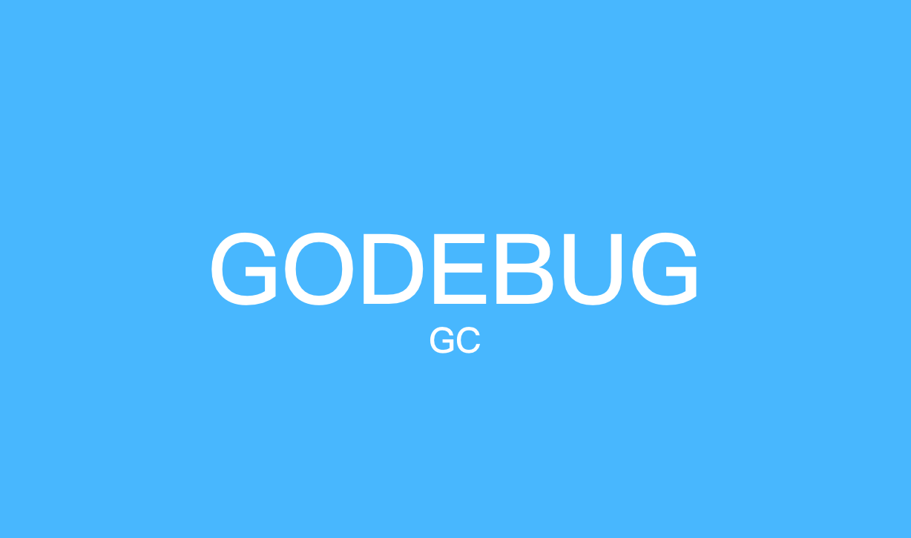

9.4 用 GODEBUG 看GC

什麼是 GC
在計算機科學中，垃圾回收（GC）是一種自動管理記憶體的機制，垃圾回收器會去嘗試回收程式不再使用的物件及其佔用的記憶體。而最早 John McCarthy 在 1959 年左右發明了垃圾回收，以簡化 Lisp 中的手動記憶體管理的機制（來自 wikipedia）。
為什麼要 GC
手動管理記憶體挺麻煩，管錯或者管漏記憶體也很糟糕，將會直接導致程式不穩定（持續洩露）甚至直接崩潰。
GC 帶來的問題
硬要說會帶來什麼問題的話，也就數大家最關注的 Stop The World（STW），STW 代指在執行某個垃圾回收演算法的某個階段時，需要將整個應用程式暫停去處理 GC 相關的工作事項。例如：
| 行為 | 會不會 STW | 為什麼 |
|---|---|---|
| 標記開始 | 會 | 在開始標記時，準備根物件的掃描，會開啟寫屏障（Write Barrier） 和 輔助GC（mutator assist），而回收器和應用程式是併發執行的，因此會暫停當前正在執行的所有 Goroutine。 |
| 併發標記中 | 不會 | 標記階段，主要目的是標記堆記憶體中仍在使用的值。 |
| 標記結束 | 會 | 在完成標記任務後，將重新掃描部分根物件，這時候會停用寫屏障（Write Barrier）和輔助GC（mutator assist），而標記階段和應用程式是併發執行的，所以在標記階段可能會有新的物件產生，因此在重新掃描時需要進行 STW。 |
如何調整 GC 頻率
可以透過 GOGC 變數設定初始垃圾收集器的目標百分比值，對比的規則為當新分配的數值與上一次收集後剩餘的實時數值的比例達到設定的目標百分比時，就會觸發 GC，預設值為 GOGC=100。如果將其設定為 GOGC=off 可以完全停用垃圾回收器，要不試試？
簡單來講就是，GOGC 的值設定的越大，GC 的頻率越低，但每次最終所觸發到 GC 的堆記憶體也會更大。
各版本 GC 情況
| 版本 | GC 演算法 | STW 時間 |
|---|---|---|
| Go 1.0 | STW（強依賴 tcmalloc） | 百ms到秒級別 |
| Go 1.3 | Mark STW, Sweep 並行 | 百ms級別 |
| Go 1.5 | 三色標記法, 併發標記清除。同時執行時從 C 和少量彙編，改為 Go 和少量彙編實作 | 10-50ms級別 |
| Go 1.6 | 1.5 中一些與併發 GC 不協調的地方更改，集中式的 GC 協調協程，改為狀態機實作 | 5ms級別 |
| Go 1.7 | GC 時由 mark 棧收縮改為併發，span 物件分配機制由 freelist 改為 bitmap 模式，SSA引入 | ms級別 |
| Go 1.8 | 混合寫屏障（hybrid write barrier）, 消除 re-scanning stack | sub ms |
| Go 1.12 | Mark Termination 流程最佳化 | sub ms, 但幾乎減少一半 |
注：資料來源於 @boya 在深圳 Gopher Meetup 的分享。
GODEBUG
GODEBUG 變數可以控制執行時內的除錯變數，引數以逗號分隔，格式為：name=val。本文著重點在 GC 的觀察上，主要涉及 gctrace 引數，我們透過設定 gctrace=1 後就可以使得垃圾收集器向標準錯誤流發出 GC 執行資訊。
涉及術語
- mark：標記階段。
- markTermination：標記結束階段。
- mutator assist：輔助 GC，是指在 GC 過程中 mutator 執行緒會併發執行，而 mutator assist 機制會協助 GC 做一部分的工作。
- heap_live：在 Go 的記憶體管理中，span 是記憶體頁的基本單元，每頁大小為 8kb，同時 Go 會根據物件的大小不同而分配不同頁數的 span，而 heap_live 就代表著所有 span 的總大小。
- dedicated / fractional / idle：在標記階段會分為三種不同的 mark worker 模式，分別是 dedicated、fractional 和 idle，它們代表著不同的專注程度，其中 dedicated 模式最專注，是完整的 GC 回收行為，fractional 只會幹部分的 GC 行為，idle 最輕鬆。這裡你只需要瞭解它是不同專注程度的 mark worker 就好了，詳細介紹我們可以等後續的文章。
演示程式碼
func main() {
wg := sync.WaitGroup{}
wg.Add(10)
for i := 0; i < 10; i++ {
go func(wg *sync.WaitGroup) {
var counter int
for i := 0; i < 1e10; i++ {
counter++
}
wg.Done()
}(&wg)
}
wg.Wait()
}
gctrace
$ GODEBUG=gctrace=1 go run main.go
gc 1 @0.032s 0%: 0.019+0.45+0.003 ms clock, 0.076+0.22/0.40/0.80+0.012 ms cpu, 4->4->0 MB, 5 MB goal, 4 P
gc 2 @0.046s 0%: 0.004+0.40+0.008 ms clock, 0.017+0.32/0.25/0.81+0.034 ms cpu, 4->4->0 MB, 5 MB goal, 4 P
gc 3 @0.063s 0%: 0.004+0.40+0.008 ms clock, 0.018+0.056/0.32/0.64+0.033 ms cpu, 4->4->0 MB, 5 MB goal, 4 P
gc 4 @0.080s 0%: 0.004+0.45+0.016 ms clock, 0.018+0.15/0.34/0.77+0.065 ms cpu, 4->4->1 MB, 5 MB goal, 4 P
gc 5 @0.095s 0%: 0.015+0.87+0.005 ms clock, 0.061+0.27/0.74/1.8+0.023 ms cpu, 4->4->1 MB, 5 MB goal, 4 P
gc 6 @0.113s 0%: 0.014+0.69+0.002 ms clock, 0.056+0.23/0.48/1.4+0.011 ms cpu, 4->4->1 MB, 5 MB goal, 4 P
gc 7 @0.140s 1%: 0.031+2.0+0.042 ms clock, 0.12+0.43/1.8/0.049+0.17 ms cpu, 4->4->1 MB, 5 MB goal, 4 P
...
格式
gc # @#s #%: #+#+# ms clock, #+#/#/#+# ms cpu, #->#-># MB, # MB goal, # P
含義
gc#：GC 執行次數的編號，每次疊加。@#s：自程式啟動後到當前的具體秒數。#%：自程式啟動以來在GC中花費的時間百分比。#+...+#：GC 的標記工作共使用的 CPU 時間佔總 CPU 時間的百分比。#->#-># MB：分別表示 GC 啟動時, GC 結束時, GC 活動時的堆大小.#MB goal：下一次觸發 GC 的記憶體佔用閾值。#P：當前使用的處理器 P 的數量。
案例
gc 7 @0.140s 1%: 0.031+2.0+0.042 ms clock, 0.12+0.43/1.8/0.049+0.17 ms cpu, 4->4->1 MB, 5 MB goal, 4 P
- gc 7：第 7 次 GC。
- @0.140s：當前是程式啟動後的 0.140s。
- 1%：程式啟動後到現在共花費 1% 的時間在 GC 上。
- 0.031+2.0+0.042 ms clock：
- 0.031：表示單個 P 在 mark 階段的 STW 時間。
- 2.0：表示所有 P 的 mark concurrent（併發標記）所使用的時間。
- 0.042：表示單個 P 的 markTermination 階段的 STW 時間。
- 0.12+0.43/1.8/0.049+0.17 ms cpu：
- 0.12：表示整個程序在 mark 階段 STW 停頓的時間。
- 0.43/1.8/0.049：0.43 表示 mutator assist 佔用的時間，1.8 表示 dedicated + fractional 佔用的時間，0.049 表示 idle 佔用的時間。
- 0.17ms：0.17 表示整個程序在 markTermination 階段 STW 時間。
- 4->4->1 MB：
- 4：表示開始 mark 階段前的 heap_live 大小。
- 4：表示開始 markTermination 階段前的 heap_live 大小。
- 1：表示被標記物件的大小。
- 5 MB goal：表示下一次觸發 GC 回收的閾值是 5 MB。
- 4 P：本次 GC 一共涉及多少個 P。
總結
透過本章節我們掌握了使用 GODEBUG 檢視應用程式 GC 執行情況的方法，只要用這種方法我們就可以觀測不同情況下 GC 的情況了，甚至可以做出非常直觀的對比圖，大家不妨嘗試一下。
關聯文章
參考
- Go GC打印出來的這些資訊都是什麼含義？
- GODEBUG之gctrace解析
- 關於Golang GC的一些誤解--真的比Java GC更領先嗎？
- @boya 深入淺出Golang Runtime PPT